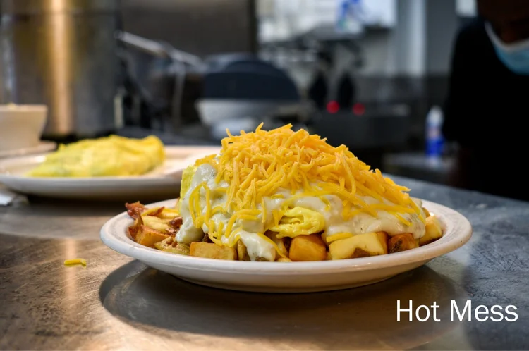
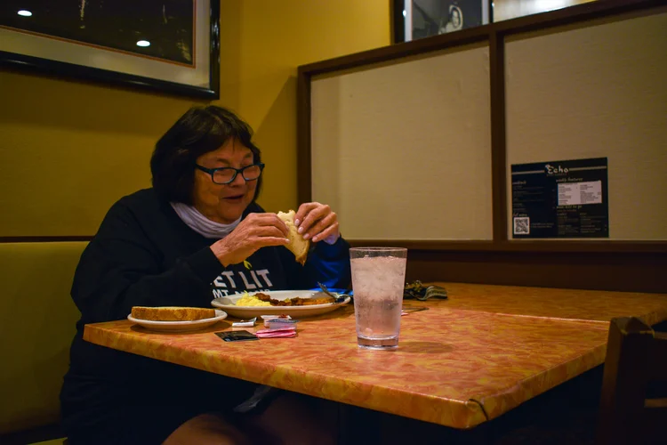

Hearty, home-cooked food with a seat that's always been yours.
A Hyde Park neighborhood staple for four generations — homemade pies, weekly features worth talking about, and a staff that still remembers your order.
A rotating lineup of favorites, made the same way they always have been — from scratch, and worth the trip.
The Flying Pig
A regulars' favorite, piled high and served the way it's always been done here.

The Hot Mess
Exactly what it sounds like — a full plate built for the days you need it.

Weekly features
New seasonal specials rotate through regularly — ask your server what's on today.
Louise's Legacy
In 1945, Louise Schwartz opened The Echo, a little sandwich shop near the corner of Edwards and Erie Avenues in Hyde Park, a bustling, blue-collar neighborhood.
In 1975, Louise expanded to include what's still called "the back room" — originally a laundry, which is why the restrooms are so small. Business thrived for years, with generations of customers enjoying the neighborhood meeting place. The staff and customers were like family — if you didn't show up for a few days, especially if you were older and lived alone, the staff would come looking for you.
In 1978, a fire closed The Echo temporarily. It reopened and thrived once again. Louise sold the restaurant in 1989 after long, dedicated service, and two owners followed, each for about three years.
In 1995, The Echo was purchased by Stephanie Surgeon, who kept the spirit of what Louise built while making a few updates of her own — like opening seven days a week for the first time, so Sunday brunch could join the lineup. It's since become one of the busiest days of the week.
The following has kept growing as the neighborhood has changed around it. Loyal longtime regulars share the counter with college students, school kids who grew up coming in with their parents, and a lunch crowd that ranges from judges and city council members to local business employees and hard-working moms grabbing a break. In 2005, a liquor license brought third-shifters in for a mimosa or a bloody mary before bed, and seasonal menus keep pace with what customers are craving — from pumpkin pie pancakes to a homemade chicken salad. Catering has been part of the mix since before the pandemic, with plenty of care taken to keep guests comfortable through it.
Recognize someone? Chances are we'll recognize you, too — our staff sticks around, and the same friendly faces greet you time and time again. We've shared in our guests' weddings, their hardships, and their everyday lives, and made some good friends along the way.
1945Louise Schwartz opens The Echo.
1975The back room opens — once a laundry.
1978A fire closes The Echo temporarily; it reopens and thrives.
1989Louise sells the restaurant after long, dedicated service.